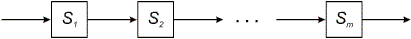
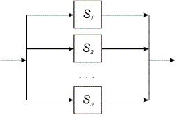
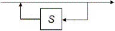
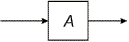
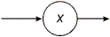
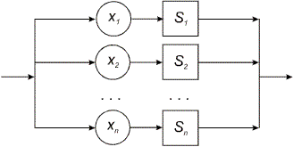
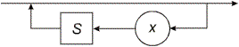

Правила преобразования графа в
программу.
В1. Свести систему графов к как можно меньшему числу отдельных графов с помощью соответствующих подстановок.
В2. Преобразовать каждый граф в описание процедуры в соответствии с приведенными ниже правилами В3-В7.
В3. Последовательность элементов

переводится в составной оператор
{
T(S1 );
T(S2 );
...;
T(Sn )
}
В4. Выбор элементов

переводится в условный оператор
if(belongsTo(ch, L1)) T(S1);
else if(belongsTo(ch, L2)) T(S2);
else ...
if(belongsTo(ch, Ln)) T(Sn);
else error();
где Li означает множество начальных символов конструкции Si (Li = first(Si )), а функция belongsTo(ch, Li) возвращает истинное значение, если символ ch принадлежит соответствующему множеству начальных символов Li и ложное значение в противном случае.
В5. Цикл вида

переводится в оператор
while(belongsTo(ch, L)) T(S);
где T(S) есть отображение S в соответствии с правилами В3-В7, а L есть множество L = first(S).
В6. Элемент графа, обозначающий другой граф A

переводится в оператор обращения к функции A().
В7. Элемент графа, обозначающий терминальный символ

переводится в оператор
if(ch == ’x’) ch = fgetc(input);
else error();
где error() – функция, к которой обращаются при появлении неправильной конструкции.
Теперь покажем применение этих правил на примере преобразования редуцированного графа (см. рис.9.2) в программу грамматического разбора.
char ch;
void A()
{
if(ch == 'x') ch = fgetc(input);
else
if(ch == '(')
{
ch = fgetc(input);
A();
while(ch == '+')
{
ch = fgetc(input);
A();
}
if(ch == ')') ch = fgetc(input);
else error();
}
else error();
}
void main(int argc, char **argv)
{
ch =fgetc(input);
A();
}
При этом преобразовании свободно применялись некоторые очевидные правила программирования, позволяющие упростить программу. Например, при буквальном переводе четвертая строка имела бы вид:
if(ch == 'x')
if(ch == 'x') ch = fgetc(input); else error();
else ...
Ясно, что ее можно сократить, как это сделано в программе. Операторы чтения в восьмой и двенадцатой строках тоже получены с помощью такого же упрощения.
По-видимому, полезно определить, когда вообще возможны подобные упрощения, и показать это непосредственно в виде графов. Два основных случая покрываются следующими дополнительными правилами:
В4а.

if(ch == 'x1')
{
ch = fgetc(input);
T(S1);
}
else
if(ch == 'x2')
{
ch = fgetc(input);
T(S2);
}
else
. . .
if(ch = 'xn')
{
ch = fgetc(input);
T(Sn);
}
else error();
В5а.

while(ch == 'x')
{
ch = fgetc(input); T(S);
}
Кроме того, часто встречающуюся конструкцию
ch = fgetc(input);
T(S);
while(W)
{
ch = fgetc(input);
T(S);
}
можно, разумеется, выразить короче:
do {
ch = fgetc(input);
T(S);
} while(W);
Мы намеренно не описываем пока функцию error ("ошибка"). Поскольку сейчас нас интересует лишь, как определить, правильно ли входное предложение, мы можем считать, что эта процедура заканчивает работу программы. На практике в случае появления неправильных конструкций нужно организовать корректную их диагностику, что будет рассмотрено далее.